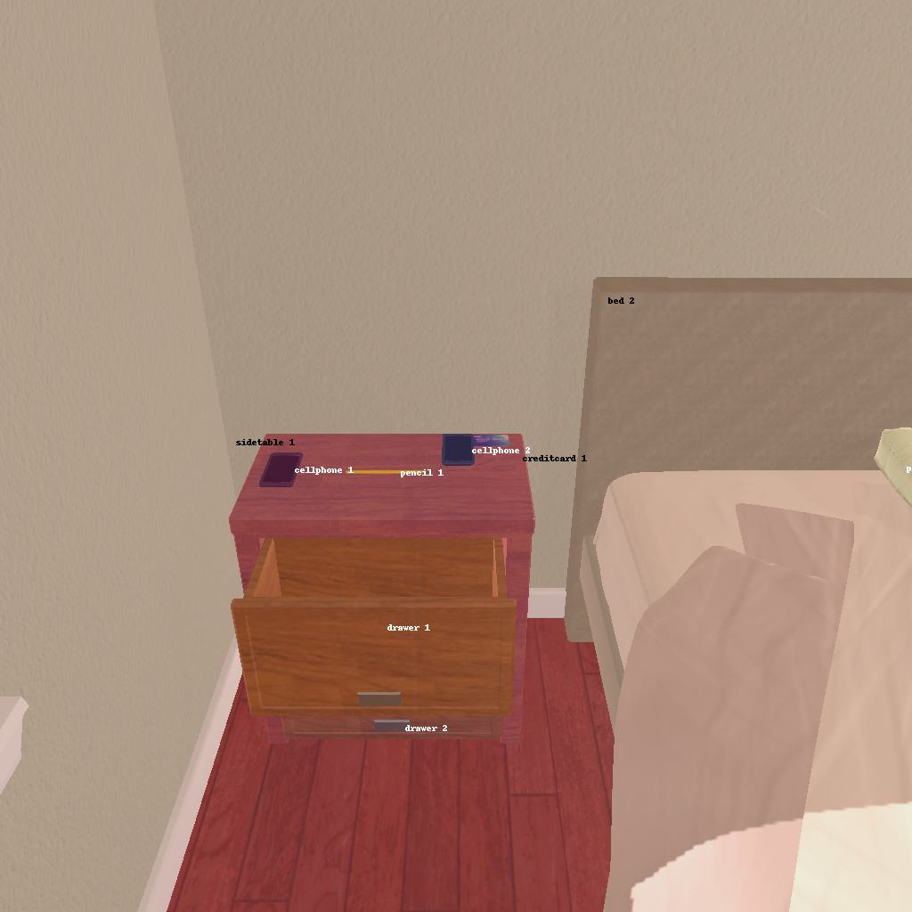

---------------------------------------------------------task: 6---------------------------------------------------------
--------------------------------------------------------------------------------------------------------------------------------------------------------------------
--------------------------------------------------------------------------------------------------------------------------------------------------------------------
Step:--------------------------------------------------------------------------2-------------------------------------------------------------------------------
----------------------------------------
VLM Prompt:
Image1:
Image2:
Image3:
**Instruction**
1. Analyze the provided image to identify all visible household objects, focusing on those relevant to the task description "put some cd on safe."
2. Use the analysis of the image and the task hint "The agent must find an object of the desired type, pick it up, find the correct location to place it, and put it down there." to answer the question: what is the most reasonable action in the choices for the task description "put some cd on safe"?
4. Decide and write the answer using the template: The answer is: (i): , where i is the real number. If there is no desired object in the image, search every place based on **Initial Observation** to find the object. And if no one is exactly correct, choose a similar answer.
**Initial Observation**
You are in the middle of a room. Looking quickly around you, you can see bed (1-2), dresser (1), sidetable (1-2), drawer (1-11), desk (1), garbagecan (1), safe (1)
**Answer Choices**
(1): go to bed 1
(2): go to dresser 1
(3): go to bed 2
(4): go to sidetable 1
(5): go to drawer 2
(6): go to sidetable 2
(7): go to drawer 3
(8): go to drawer 4
(9): go to desk 1
(10): go to garbagecan 1
(11): go to drawer 5
(12): go to drawer 6
(13): go to drawer 7
(14): go to drawer 8
(15): go to drawer 9
(16): go to drawer 10
(17): go to drawer 11
(18): go to safe 1
(19): close drawer 1
(20): take pillow 1 from drawer 1
(21): take cellphone 1 from drawer 1
(22): take cellphone 2 from drawer 1
(23): take creditcard 1 from drawer 1
(24): take pencil 1 from drawer 1
(25): examine drawer 1
**Answer**
Let's think step by step by following the instructions.
----------------------------------------
----------------------------------------
Original Response:
- First, we identify all visible household objects relevant to the task of "put some cd on safe." In the images provided, we can see a sidetable with drawers and items on top of it, such as a cellphone, a pencil, and a credit card. There is no visible CD or safe in the images.
- Based on the initial observation, we know there is a safe (safe 1) in the room.
- Since the task description is to "put some cd on safe," and we do not see any CDs in the images provided, the agent must search the places where a CD could be found.
- Looking at the answer choices, none explicitly mentions finding or picking up a CD. Therefore, the agent should search every place based on the initial observation to find the object, which in this case, would be a CD.
The answer is: (18): go to safe 1. If there are CDs near the safe or in a location not mentioned in the answer choices, this action would bring the agent closer to completing the task. If the CDs are not there, the agent can continue searching the listed locations.
----------------------------------------
----------------------------------------
>>> Refine Original VLM Response and Get Pure Action: go to safe 1
----------------------------------------
-----------------------------------------------------------------
Running time: 11.96583342552185 seconds
Total Money: 3.08391
-----------------------------------------------------------------
-----------------------------------------------------------------
Text Observation:You arrive at loc 18. The safe 1 is closed.
-----------------------------------------------------------------
UNSUCCEED